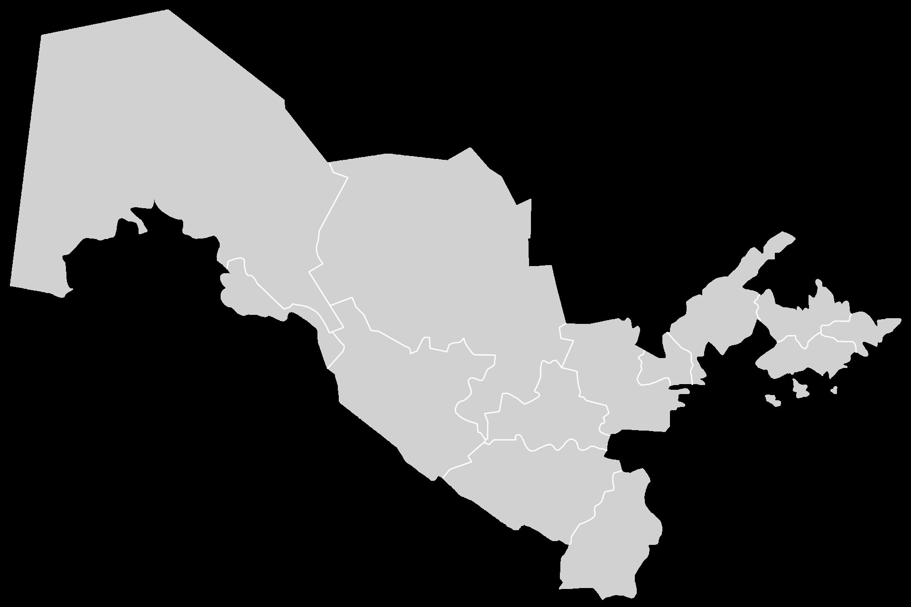

Uzbekistan Draws 9.1 Million Foreign Visitors in Eight Months as Tourism Exports Hit $4.6 Billion
Foreign arrivals rose 21.1% to 9.1 million in January–August 2026. Tourism service exports grew 53.5% to $4.6 billion, and average spending per tourist reached $503.

According to Uzbekistan's Tourism Committee and the National Statistics Committee, 9,102,729 foreign nationals visited the country in January–August 2026 — up 21.1% year-on-year, roughly 1.6 million more than the same period of 2025.
Tourism exports and spending
Tourism service exports rose 53.5% to $4.6 billion over the period. Per Euronews, average spending per tourist climbed from $197 in 2017 to $503, with an average stay of 8 days.
Where visitors come from
Most visitors come from neighbouring states: Kyrgyzstan 2,524,378, Kazakhstan 2,171,581, Tajikistan 2,025,400, Russia 867,757 and China 318,465. Long-haul markets are growing fast: arrivals from China rose 2.3x, Malaysia 2x, Japan 1.5x; Germany +25%, France and the UK +21%.
Infrastructure and visa-free travel
The Tourism Committee says 705 new accommodation facilities opened in January–July 2026, adding 22,296 beds. There are now 7,440 registered facilities with over 202,000 beds. The visa-free regime now covers citizens of 94 countries.
“Beyond the classic route”
We are also seeing more visitors travelling beyond the classic route of Tashkent, Samarkand, Bukhara and Khiva.
— Oybek Hakimov, Adviser to the Chairman of Uzbekistan's Tourism Committee (Euronews, 15 September 2026)
Context
Sources note a large share of arrivals are cross-border travellers from Kyrgyzstan, Kazakhstan and Tajikistan, some visiting relatives — so the figure should not be equated solely with leisure tourism. Officials project 11–12 million visitors for full-year 2026.
By the numbers
- Foreign arrivals (Jan–Aug 2026): 9,102,729 (+21.1%)
- Tourism service exports: $4.6bn (+53.5%)
- Average spend: $503 (2017: $197)
- Average stay: 8 days
- Kyrgyzstan: 2,524,378; Kazakhstan: 2,171,581; Tajikistan: 2,025,400
- Russia: 867,757; China: 318,465
- New facilities (Jan–Jul): 705 (+22,296 beds)
- Total facilities: 7,440 (202,000+ beds)
- Visa-free: 94 countries
- 2026 full-year projection: 11–12 million